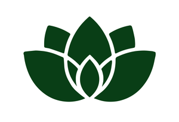

不提醒，就不开始。
提醒多了，关系又容易紧张。我们可以先看见，开始一个任务究竟难在哪里。
从支持环境看起
议敏 Amy学习赋能 · 家庭成长 一起看清卡点AMY · LEARNING & GROWTH
看清学习卡点，
支持孩子逐步找回主动。
我是议敏 Amy，一名青少年学习赋能教练。
陪伴孩子探索学习，也陪伴父母找到支持的位置。
01 / 从真实的日常开始
先停在一个具体的场景里，
看看孩子正在经历什么。
02 / AMY 的学习赋能框架
把成长环境、学习策略、内驱力和心理韧性
放在一起看，找到当下可以行动的入口。
SUPPORTIVE ENVIRONMENT
孩子说“不会”“累了”时，能否先被听见？情绪与鼓励构成成长环境，让真实的困难有机会被看见。
谈起学习时，孩子敢说出哪一步不会吗？
E→S→I→R→成绩
成绩是结果层，用来观察与反馈。RISE 是 Amy 从教育实践中形成的整合框架。相关心理学与学习科学研究为具体构念提供参考；每个家庭仍需要结合真实情况观察与调整。
03 / 我的工作，始于这些相信
关注一次次真实的选择、尝试与复盘。
让孩子在学习中，逐步找到自己的抓手。
孩子的感受、关系与选择空间，也是理解学习的重要线索。
在具体任务里尝试、发现卡点、调整方法。支持与行动，一起发生。
家长调整支持方式，孩子逐步认领行动。各自有位置，也彼此连接。
04 / 实践与案例
从一个场景、一段对话、一次尝试出发。
把方法放回真实生活，才能看见它的边界。
以下为常见学习场景的方法示例。公开案例将在核实来源、完成授权与脱敏后更新。
05 / 关于 AMY
我的工作，连接着孩子的学习、
父母的支持，以及关系里的成长。
从音乐电台，到企业文化工作，再到国际学校家校工作，我不断学习如何倾听、如何支持一个人、如何让协作真正发生。
作为一位青春期孩子的妈妈，我也理解父母想帮助孩子时的牵挂。如今，这些经验汇入我的学习赋能实践。
06 / 课程与相遇
先学会观察，再试着行动。
从适合当下的一步开始。
看见卡点 · 观察证据 · 小步行动
AMY · LEARNING & GROWTH课程主题
围绕学习情绪、行动启动、策略与复盘等家庭场景，学习用 RISE 看见卡点。每次聚焦一个小行动，再观察孩子的反应。
具体开放内容、课期与费用以正式安排为准。
07 / 找到适合你的支持
适合想先理解学习卡点、愿意在家庭中尝试小行动的家长。
适合已经尝试过，希望结合自家情况厘清重点与下一步的家庭。
适合需要持续支持、孩子与家长都愿意参与协作的家庭。
服务形式、费用与参与安排在沟通时明确。不承诺分数、名次或固定见效时间。
08 / RISE 笔记
一些观点，值得慢慢读。
一些行动，值得认真试。
在开始之前
学习赋能关注学习过程中的环境、动力、策略与韧性，帮助孩子看清卡点、调整行动。具体学科教学需求需要结合情况另行安排。
需要。孩子的学习行动与家长的支持方式彼此影响。双轨协作意味着家长也观察和调整自己的支持方式，具体参与安排会在沟通时明确。
每个家庭的起点不同。我们通过任务启动、困难表达、策略使用等具体行为观察变化，再共同调整。不承诺统一的见效时间或分数结果。
如果出现持续拒学、明显情绪变化或生活功能受损，应寻求适当的专业评估。学习赋能属于教育支持，不能替代心理或医疗服务。
一起，从看清开始
带着一个具体场景来。
我们从那里，开始理解孩子的学习。
先整理你的观察。正式联系与预约入口将在开放后显示。